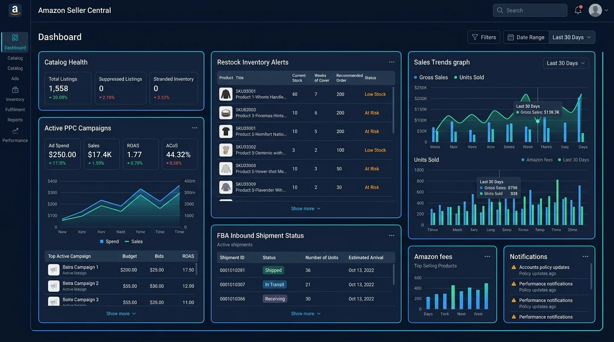
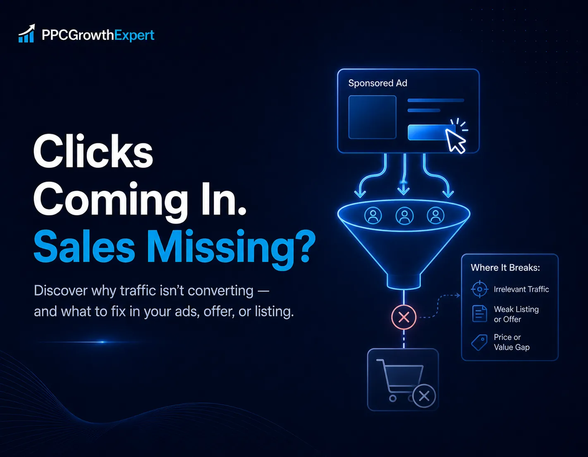
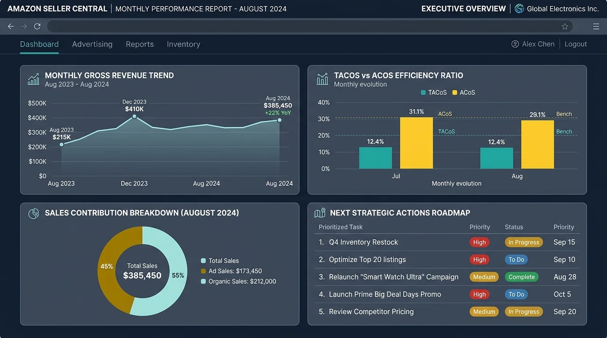

Article Index · Jump to Any Section (15 Sections + FAQs)
1. Introduction: Why Every Amazon Seller Should Understand Seller Central
A very common situation I see across Indian businesses looks like this: A manufacturer in Surat, a brassware artisan in Moradabad, or a retail apparel store owner in Delhi completes their Amazon seller registration, lists 10 products, and waits. A few days later, orders start trickling in.
Suddenly, the screen in front of them feels like the cockpit of a commercial airliner. There are dozens of widgets, blinking notifications, fluctuating numbers, and multi-tier sub-menus. The business owner asks: "Where do I actually see how much money I made today? Why does my sales card show ₹45,000, but my bank payout shows ₹26,000? Where do I check if an order was picked up by the courier? What does this red flag on Account Health mean?"
This is where many first-time sellers get overwhelmed and either make expensive operational mistakes or blindly hand off their account to an external agency without having any mechanism to audit what is happening.
Here is the core truth: Even if you eventually hire an account manager or partner with an agency, as the business owner, you must understand how Seller Central works. You need to know how orders flow, how fees are deducted, how inventory is monitored, and how to read the diagnostic reports that explain whether your products are converting or bleeding cash.
In this practical amazon seller central tutorial, we will cut through the clutter and teach you the exact operational workflows, dashboard cards, business reports, and account settings you need to run a profitable, compliant Amazon India business.
We do not offer textbook definitions. Instead, we walk you step-by-step through the real Seller Central India interface: how to decode your home dashboard, how to extract critical ASIN data from Business Reports, how to reconcile GST and payments, which account settings must be locked down, and the exact 15-minute daily operational routine practiced by seasoned e-commerce professionals.
2. What Is Amazon Seller Central India?
Amazon Seller Central India (sellercentral.amazon.in) is the central web-based enterprise portal provided by Amazon for 3P (third-party) merchants.
It is crucial for beginners to distinguish Seller Central from the customer-facing shopping application:
Amazon Shopping Portal (amazon.in)
What buyers see: product titles, main images, prices, customer reviews, delivery date estimates, and the "Buy Now" button. It is purely designed for discovery, browsing, and frictionless consumer checkout.
Amazon Seller Central (sellercentral.amazon.in)
What you manage: product catalog data, inventory levels, pick-up schedules (Easy Ship / ATS), FBA warehouse inbound shipments, customer return authorizations, pricing rules, advertising campaigns, tax invoices, and bi-weekly bank settlements.
In simple terms, Seller Central is your complete e-commerce enterprise resource planning (ERP) system inside the Amazon ecosystem. Everything that happens between a customer placing an order and money hitting your Indian bank account is governed through this interface.
3. How to Access Amazon Seller Central India Safely
Accessing your seller account is straightforward, but maintaining operational security is an area where many Indian sellers commit critical errors.
Official Access Gateway
Always navigate directly to the verified URL: https://sellercentral.amazon.in/. Bookmark this URL in your primary desktop browser. Never click on unverified links in SMS messages or emails claiming your account is suspended—phishing scams targeting Indian sellers are widespread.
Mandatory Two-Step Verification (2SV)
Amazon strictly enforces Two-Step Verification for all Indian seller accounts. When logging in, you must provide:
- Your registered business email address or primary mobile number.
- Your secure account password.
- A 6-digit Time-based One-Time Password (TOTP) received via SMS or generated by an authenticator app.
In India, SMS delivery delays from telecom providers are common during peak business hours. I strongly recommend setting up an authenticator app (such as Google Authenticator, Microsoft Authenticator, or 2FAS) as your primary 2SV method. This generates dynamic codes instantly on your device even without cellular reception or mobile network connectivity.
User Permissions vs. Sharing Primary Credentials
Never share your primary login credentials (email and password) with staff, accountants, or external consultants.
If an employee or agency needs to manage your listings or fulfill orders, use the User Permissions feature (Settings > User Permissions). You can send an invitation to their email address and grant granular, role-based access—such as allowing them to view orders and edit listings while completely hiding financial statements, bank account details, and legal tax information.
4. Understanding the Amazon Seller Central Dashboard
When you log in to Seller Central India, the homepage presents an interactive dashboard arranged into modular widgets (cards). Each card monitors a vital organ of your e-commerce business.

Let's break down the nine essential dashboard areas, what they mean, and what operational action is required:
| Dashboard Widget | What It Displays | Why It Matters | Action Required When Checked |
|---|---|---|---|
| 1. Sales Overview | Today's sales (INR ₹), total units sold, and historical comparisons (7-day, 15-day, 30-day). | Gives an immediate pulse of daily customer purchasing velocity across your catalog. | Notice sudden drops; check if top ASINs ran out of stock or lost the Buy Box to a competitor. |
| 2. Open Orders | Pending orders, unshipped orders, and return requests awaiting handling. | Directly impacts your shipping SLAs (Late Dispatch Rate). | Schedule Amazon Easy Ship courier pickups immediately. Confirm packages are packed before daily cut-off. |
| 3. Account Health (AHR) | A color-coded score from 0 to 1,000 (Green: 200–1000, Yellow: 100–199, Red: <100). | The survival rating of your store. Falling below 200 puts your account at risk of suspension. | Resolve policy warnings, intellectual property flags, or buyer complaints within 48–72 hours. |
| 4. Performance Notifications | Direct communication inbox from Amazon Seller Performance and Compliance teams. | Contains urgent compliance notices, trademark disputes, and KYC verification alerts. | Treat red badge alerts as top priority. Never leave a performance notification unread. |
| 5. Inventory Summary | Fulfillable stock, low stock warnings, and out-of-stock ASIN counts. | Stockouts erase organic keyword ranking that took months of ad spend to build. | Trigger inventory replenishment from factory to warehouse before lead-time buffer expires. |
| 6. Listing Status | Count of Active, Inactive, and Search-Suppressed listings. | Suppressed listings are invisible to Amazon shoppers searching on amazon.in. | Fix missing product attributes, main image white background violations, or pricing errors. |
| 7. Payments & Settlement | Current open statement balance, upcoming scheduled payout date, and reserve funds. | Determines your operational working capital for raw materials, manufacturing, and ad budgets. | Check for unusual reserve deductions (claims/returns) and reconcile against bank deposits. |
| 8. Advertising Snapshot | Sponsored Products ad spend, ad-attributed sales, and high-level Return on Ad Spend (ROAS). | Prevents runaway ad spend from silently consuming your gross profit margins. | Compare ad spend against total sales (TACoS). Ensure ad budgets remain within target margins. |
| 9. Action Items & Voice of Customer | Customer return reason insights, Negative Customer Experience (NCX) rates, and policy changes. | Highlights recurring product defects, poor packaging, or inaccurate sizing before suspensions occur. | Update listing descriptions or packaging if buyers repeatedly cite "product defective" or "wrong size". |
A common mistake new sellers make is panicking when the Sales widget shows ₹0 at 10:00 AM after seeing orders placed. Remember that Amazon dashboard metrics update dynamically throughout the day, and orders in "Pending" state (awaiting payment authorization or COD verification) are not calculated into "Ordered Product Sales" until payment clears.
6. Amazon Business Reports: Which Reports Should Sellers Understand?
If the Seller Central dashboard is your speedometer, Business Reports is your telemetry engine. Targeting the essential keyword business reports amazon, this section explains the single most valuable analytics tool available to professional sellers.
How to Find Business Reports
In the main navigation menu, go to Reports > Business Reports (or visit the direct directory at
sellercentral.amazon.in/gp/site-directory and select Business Reports).

The Core Report You Must Audit Weekly
In the left sidebar of Business Reports, under "By ASIN", click on:
👉 Detail Page Sales and Traffic by Child Item
This is the holy grail of product-level analysis. It breaks down performance for every specific variant (color, size, pack size) in your catalog.
Decoding the Key Business Report Metrics in Plain English
1. Sessions vs. Page Views
Sessions: Number of unique customer visits to your product page within a 24-hour window.
If a buyer visits your listing 5 times in one afternoon, that counts as 1 Session.
Page Views: Total number of times the page was loaded. That same buyer generates 5 Page Views.
Rule: Always evaluate Sessions. It represents real human shoppers.
2. Featured Offer (Buy Box) Percentage
The percentage of time your offer won the primary "Add to Cart / Buy Now" button when shoppers viewed
your listing.
Healthy benchmark: 90%–100%.
If your Buy Box % drops below 80%: Check if unauthorized resellers have undercut your price, or if
your delivery promise is slower than a Prime competitor.
3. Units Ordered & Ordered Product Sales
Units Ordered: Exact count of physical items purchased.
Ordered Product Sales: Gross revenue in INR (Price × Units Ordered).
Remember: This is gross sales before Amazon referral fees, closing fees, shipping deductions, and GST.
4. Unit Session Percentage (Conversion Rate)
This is your most important listing efficiency metric:
Unit Session % = (Units Ordered ÷ Sessions) × 100
If an ASIN gets 1,000 sessions and generates 80 unit orders, your conversion rate is 8.0%.
Category benchmark for India: 6%–15% depending on price point and product tier.
Practical Diagnostic Example: High Traffic, Low Orders
Illustrative Example: Suppose you review an ASIN for a stainless steel kitchen bottle. The report shows:
- Sessions: 1,200 unique visitors in the last 14 days.
- Units Ordered: 12 units.
- Unit Session %: 1.0% (Critically Low).
- Buy Box %: 98% (Healthy).
How to diagnose: The traffic is arriving (1,200 prospective shoppers), but 99 out of 100 leave without buying. The problem is not visibility or advertising—the problem is on-page conversion. Check: 1) Is the selling price higher than comparable top-rated competitors? 2) Does the main image look unprofessional or lack white-background compliance? 3) Are there negative 1-star reviews on top of the review stack citing leakages? 4) Are delivery dates showing 5–7 days because the product is Self-Ship rather than Amazon Prime (FBA)?
7. Other Important Amazon Seller Reports
Beyond Business Reports, Seller Central provides specialized reports necessary for inventory management, logistics reconciliation, and Indian tax compliance:

FBA Inventory & Health Reports
Navigate to Reports > Fulfillment. Here you can download:
- Manage FBA Inventory Report: Real-time available, reserved, and unfulfillable stock counts across Indian FCs.
- FBA Long-Term Storage Fee Report: Identifies units aged over 180 and 365 days that incur punitive monthly storage penalties.
- Stranded Inventory Report: Units stuck in fulfillment centers without an active offer.
Customer Returns & Return Reports
Navigate to Reports > Fulfillment > Customer Returns. Review exact customer-selected return reasons: "Defective/Does not work", "Unwanted item", "Size too small", or "Missing parts". If a particular variant exhibits an abnormally high return rate, audit your product packaging and size charts immediately to prevent account health flags.
Tax Document Library: Monthly Tax Report (MTR)
Navigate to Reports > Tax Document Library > Merchant Tax Report (MTR). This is an absolute legal requirement for Indian sellers. On the 4th–5th of every month, download:
- B2C & B2B Sales Tax Report: Itemized GST breakdown of every order delivered, state of supply, and GSTIN of business customers. Your Chartered Accountant needs this to file GSTR-1 and GSTR-3B.
- Amazon Fee Invoices: Monthly GST tax invoices issued by Amazon India for referral fees, FBA storage, and shipping. These enable you to claim Input Tax Credit (ITC) on all Amazon platform fees.
Advertising Reports (Campaign Manager)
Unlike Business Reports, advertising reports are housed inside the Amazon Advertising portal: Advertising > Campaign Manager > Measurement & Reporting > Sponsored Ads Reports. Download the Search Term Report weekly to harvest profitable customer search queries and negate non-converting search terms draining your PPC budget.
8. Key Amazon Seller Central Settings You Should Configure
In the top-right corner of Seller Central, click the gear icon (Settings). Proper configuration here protects your account against operational penalties and security vulnerabilities.
| Setting Category | What It Controls | Common Configuration Pitfall | Recommended Action |
|---|---|---|---|
| Account Info | Legal business name, registered GSTIN, primary bank account, and KYC verification documents. | Editing bank details during a payout settlement cycle can trigger a temporary 72-hour fraud security hold. | Ensure bank holder name matches your PAN character-for-character. Update details immediately after a payout completes. |
| Shipping Settings | Easy Ship pickup addresses, Self-Ship service regions, handling times, and shipping templates. | Leaving default 1-day handling time when your workshop requires 2 days to pack items, causing late dispatch flags. | Set a realistic handling time (1–2 days). Verify your warehouse pincode is serviceable by Amazon ATS. |
| Return Settings | Return authorization rules, returnless refunds, and registered return merchandise address. | Leaving customer returns directed to an old or unmonitored warehouse address. | Configure your verified local address. Enable automated return authorization under standard Amazon policies. |
| Notification Preferences | Email and SMS alerts for order updates, buyer messages, claims, and emergency policy holds. | Using an unmonitored personal email or turning off SMS notifications for customer claims. | Assign a dedicated business operational email. Enable instant SMS alerts for A-to-z Guarantee Claims and Safe-T claims. |
| User Permissions | Secondary sub-accounts for employees, catalog freelancers, and agencies. | Granting full "Administrator" permissions to third parties, allowing them to view financial bank settlements. | Grant minimal permissions required for their specific role (e.g., "Manage Inventory" and "Manage Orders" only). |
| Vacation Settings | Temporarily switches Self-Ship and Easy Ship listings to "Inactive". | Going on holiday or closing for Diwali without activating vacation mode, accumulating dozens of late dispatch strikes. | Toggle listings to Inactive 48 hours before factory shutdowns. (Note: FBA inventory remains active automatically). |
Struggling to Navigate Seller Central & Scale Your Sales?
Don't let complex reports, fee structures, or account health warnings derail your Amazon business. Get 3 days of intensive, 1-on-1 practical training covering live Seller Central navigation, FBA logistics, listing SEO, and high-ROI advertising.
9. Amazon Seller Central Mobile App: What Can You Manage?
Targeting our secondary keyword amazon seller app, the mobile application (available on iOS and Android) is an indispensable companion for Indian business owners who cannot be seated in front of a laptop all day.
What the Amazon Seller App Does Exceptionally Well
Order Monitoring & Packing
Receive push notifications the moment an order arrives. Schedule Easy Ship pickups, confirm dispatches, and check customer delivery statuses while on the move.
Buyer Communication (24h SLA)
Amazon requires customer messages to be answered within 24 hours (even on weekends). The mobile app allows you to reply immediately and protect your Contact Response Time SLA.
Urgent Price & Stock Alerts
Quickly adjust prices, match competitor price drops, activate or deactivate out-of-stock listings, and view instant flash sales updates during festival sales.
The Amazon Seller app is designed for monitoring and triage, not deep business analysis. You cannot perform in-depth multi-variant Business Report pivot tables, audit bulk settlement flat files, create sophisticated 4-tier PPC campaigns, or construct rich A+ Content and Brand Stores from a mobile phone. Always use a desktop browser for weekly analytical reviews and monthly financial reconciliations.
10. How to Analyse Your Amazon Business Performance Using Seller Central
The hallmark of an amateur seller is opening Seller Central, looking solely at "Today's Sales," and assuming everything is fine. An experienced e-commerce professional combines data across four distinct sections to diagnose true operational health.

Sales Are Increasing, but Bank Deposits Are Disappointing
The Problem: Your dashboard shows ₹3,00,000 in monthly sales, but your bank payouts total only ₹1,40,000.
The Investigation: Navigate to Payments > Payments Dashboard. Review:
- Amazon Platform Deductions: Calculate total Referral Fees (typically 5%–18%), Closing Fees (₹5–₹60), and FBA Pick & Pack fees.
- Customer Returns & Refunds: Check how much cash was reversed due to returns.
- Advertising Invoices: Were PPC ad costs automatically deducted from your account balance rather than charged to a credit card?
- Account Reserve: Amazon holds a rolling 7-day reserve for recent dispatches to cover potential A-to-z claims and returns.
Traffic Is High, but Orders Are Missing
The Problem: You are spending ₹500/day on Sponsored Products, generating plenty of clicks, but barely getting 1–2 orders.
The Investigation: Open Reports > Business Reports > Detail Page Sales and Traffic by Child Item.
- Compare Sessions against Units Ordered. If Sessions exceed 200 but Unit Session % is under 1.5%, your listing is failing to convert.
- Check the Search Term Report in Advertising Campaign Manager. Are your ads triggering broad, irrelevant search queries?
- Inspect your customer reviews. Did a recent 1-star review about delayed shipping or broken packaging get voted "Most Helpful"?
Inventory Running Low on Top Revenue Generators
The Problem: Your hero ASIN sells 25 units/day, but you only have 90 units remaining in FBA.
The Investigation: Go to Inventory > Manage FBA Inventory.
- Calculate your Run-Rate Lead Time: At 25 units/day, 90 units will stock out in 3.6 days.
- Factor in shipment preparation and Amazon FC check-in times (typically 4–7 days in Indian fulfillment centers during peak season).
- Initiate an inbound replenishment shipment immediately to avoid a stockout that destroys organic keyword ranking.
Discrepancy Between Ad Sales and Total Business Sales
The Problem: Campaign Manager reports ₹1,20,000 in ad-attributed sales, but Business Reports shows total sales of ₹1,40,000.
The Investigation: Understand the difference between the two systems:
- Advertising Attribution: Amazon Ads uses a 14-day attribution window for Sponsored Products (7-day for vendors) and attributes sales to the last-clicked ad.
- Organic Halo Effect: Total Sales = Ad-Attributed Sales + Pure Organic Sales.
- Calculate your TACoS (Total Advertising Cost of Sale):
Total Ad Spend ÷ Total Revenue × 100. A sustainable TACoS is typically 8%–15% for mature accounts.
11. Common Seller Central Mistakes Beginners Should Avoid
In my experience consulting with Indian businesses, the vast majority of account suspensions and margin collapses arise from these ten preventable errors:
Chasing Topline Revenue While Ignoring Net Margin
Celebrating ₹10 Lakhs in monthly sales without accounting for 18% GST, 12% Amazon referral fee, ₹60 shipping, and ₹1.5 Lakhs in PPC spend. Always audit net cash in bank.
Ignoring Performance Notifications
Leaving policy warnings or customer complaints unread. An unaddressed intellectual property complaint or authenticity claim can lead to listing suspension within 72 hours.
Sharing Primary Root Admin Credentials
Giving employees or external agencies the master login ID and password. Always use User Permissions with restricted, role-based access.
Comparing Reports Across Conflicting Date Ranges
Comparing Advertising Reports (which default to UTC time zone) with Business Reports (which run on marketplace local time—IST for India). Align date filters accurately.
Neglecting Stranded FBA Inventory
Assuming that because stock was delivered to an Amazon warehouse, it is actively selling. Regularly check Fix Stranded Inventory to reconnect orphaned listings.
Failing to Download Monthly MTR Reports
Scrambling on the 19th of the month to file GST returns. Download your Merchant Tax Report (MTR) on the 5th of every month and provide it to your CA for GSTR-1 matching.
Missing the 24-Hour Buyer Messaging SLA
Letting customer inquiries sit over weekends. Unanswered messages degrade your Customer Service Performance metrics. Use the Amazon Seller mobile app to reply promptly.
Leaving Stock Active During Factory Holidays
Closing your workshop for festival holidays without enabling Vacation Mode. Result: dozens of unshipped orders, late dispatch penalties, and account health warnings.
12. A Practical Seller Central Routine: Daily, Weekly and Monthly Checks
You do not need to spend eight hours a day staring at Seller Central. Follow this structured operational routine designed for busy Indian business owners and e-commerce managers:

Daily Morning Checklist
- Account Health & Performance Notifications: Confirm Account Health Rating is green and zero unread policy alerts exist.
- Open Orders: Review unshipped Easy Ship orders, print shipping labels and tax invoices, and package items before courier pickup cutoff.
- Customer Messages: Respond to all customer inquiries within the mandatory 24-hour SLA window.
- Critical Stock Alerts: Verify top 3 revenue-driving ASINs are fulfillable and in stock.
Weekly Analytical Checklist
- Business Reports Audit: Open Detail Page Sales & Traffic by Child Item. Evaluate 7-day Sessions and Unit Session % trends.
- Buy Box Monitoring: Filter for ASINs where Buy Box % has dropped below 85% to identify repricing needs or stock issues.
- FBA Replenishment Review: Calculate 30-day inventory run-rate and generate inbound shipping plans for stock reaching the reorder point.
- PPC Search Term Harvest: Download the Search Term Report from Campaign Manager; add high-converting search queries to exact match campaigns and negate non-converting terms.
- Voice of Customer: Review Customer Returns to catch recurring defects or packaging problems early.
Monthly Strategic & Financial Checklist
- Tax Document Library: Download the Merchant Tax Report (MTR) and Amazon Fee Tax Invoices for GSTR-1, GSTR-3B, and ITC filing.
- Settlement Reconciliation: Reconcile bank deposits against Seller Central settlement statements and audit reserve balances.
- TACoS & Profit Audit: Calculate net profit after all COGS, Amazon referral fees, logistics costs, and ad spend using our free Amazon Profit Calculator.
- Aged Inventory Liquidation: Identify slow-moving inventory approaching 180+ days in FBA and run outlet deals or price markdowns.
13. How PPC Growth Expert Can Help You Manage and Understand Seller Central
At PPC Growth Expert, we partner directly with Indian manufacturers, retail shopkeepers, and D2C brands. Whether you want to master Seller Central yourself or completely delegate daily operational tasks to seasoned professionals, we offer two distinct, proven pathways:
Amazon E-commerce Training (ATES Course)
Practical 1-on-1 mentorship led personally by Anmol Pokhriyal. Designed for founders, traditional shop owners, and in-house staff who want to understand the engine themselves:
- 3 Days Live Training (6 Hours Total): Interactive, hands-on screen sharing directly in Seller Central.
- Live Dashboard & Report Navigation: How to extract and decode Business Reports like a pro.
- Product Listing SEO & A+ Content: Creating mobile-indexed listings that convert visitors into buyers.
- FBA Logistics & Inbound Planning: Box labels, carton weights, and multi-state fulfillment centers.
- PPC Campaign Architecture: Launching Sponsored Products with disciplined TACoS governance.
Amazon Seller Account Management Services
Full-service operational partnership for busy manufacturers, wholesalers, and growing brands who lack the internal bandwidth to handle daily Seller Central complexities:
- End-to-End Account Operations: Catalog updates, pricing rules, and stranded inventory fixes.
- Listing & A+ Content Design: Infographics, brand stories, and keyword architecture.
- FBA Logistics Coordination: Shipment creation, carton labeling, and warehouse intake.
- Account Health Protection: Proactive SLA monitoring (ODR, LDR) and POA resolutions.
- Algorithmic PPC Management: Weekly search term harvesting, bid optimization, and TACoS scaling.
14. Frequently Asked Questions About Amazon Seller Central India
Authoritative answers to the 15 most frequent dashboard, reports, and settings queries:
1. What is Amazon Seller Central India?
Amazon Seller Central India (sellercentral.amazon.in) is the unified web portal and operational command center where Indian marketplace sellers manage their entire e-commerce business. Sellers use it to create product listings, manage inventory, schedule Easy Ship and FBA dispatches, monitor Account Health, reconcile bi-weekly bank settlements, and analyze traffic and conversion data through Business Reports.
2. How do I log in to Amazon Seller Central India?
Visit sellercentral.amazon.in on a desktop browser. Click Sign In and enter your registered business email or mobile number and password. Complete Two-Step Verification (2SV) using an OTP sent via SMS or a timed code generated by an Authenticator app (such as Google Authenticator).
3. How do I use the Amazon Seller Central dashboard?
The Seller Central dashboard functions as an operational summary card deck. After logging in, immediately review your Account Health Rating (AHR) and Performance Notifications for urgent compliance alerts. Next, check Open Orders to fulfill Easy Ship packages on time, verify your Inventory alerts for stockouts, and check your Payments card for current open settlement balances.
4. What should I check first after logging into Seller Central?
Always check Performance Notifications and Account Health first. Unresolved policy warnings, intellectual property complaints, or customer claims can lead to immediate listing suppression or account deactivation. Only after confirming account health is clear should you review open orders and sales figures.
5. Where can I find Business Reports in Amazon Seller Central?
In the main navigation menu, click Reports and select Business Reports (or navigate to sellercentral.amazon.in/gp/site-directory and choose Business Reports). From the left sidebar, click 'Detail Page Sales and Traffic by Child Item' to see ASIN-level traffic, sessions, page views, and conversion rates.
6. How can I check my Amazon sales report?
Go to Reports > Business Reports > Sales and Traffic. You can toggle between daily, weekly, and monthly views to track Ordered Product Sales, total units ordered, average sale price per unit, and overall account conversion trends.
7. What are Sessions and Page Views in Amazon Business Reports?
A Session represents a unique customer visit to your product detail page within a 24-hour window, regardless of how many times they view the page. A Page View counts every single page load. If one buyer views your product 4 times in one day, Amazon records 1 Session and 4 Page Views. Sessions is the true measure of unique prospective buyers.
8. How can I check my inventory in Seller Central?
Click on the main menu, hover over Inventory, and select 'Manage All Inventory'. For FBA sellers, select 'Manage FBA Inventory' to review inbound shipments, fulfillable units, reserved inventory, and stranded stock that requires listing fixes.
9. How do I check Amazon seller payments and settlements?
Navigate to Payments > Payments Dashboard. Here you will see your total balance, available funds, account reserves (funds held for customer returns), and scheduled payout date. Click 'All Statements' to download itemized settlement flat files or summary PDF statements for your accountant.
10. What is the difference between Seller Central and the Amazon Seller app?
The Amazon Seller mobile app is designed for fast operational monitoring on the go—checking today's sales, confirming order dispatches, replying to customer inquiries within 24 hours, and checking pricing. The desktop Seller Central portal provides the full suite of advanced tools, including deep Business Reports pivoting, multi-tier PPC campaign management, flat-file catalog uploads, and tax invoice downloads.
11. Can I manage my Amazon seller account from my mobile phone?
You can manage daily order monitoring, rapid customer messaging, basic price adjustments, and inventory stock alerts from your mobile phone using the Amazon Seller app. However, strategic activities like complex listing creation, in-depth business reporting, tax reconciliation, and advertising optimization require a desktop browser.
12. Which reports should an Amazon seller check regularly?
Every seller should review: 1) Detail Page Sales and Traffic by Child Item (weekly for conversion audits), 2) Manage FBA Inventory / Low Stock Report (weekly for reordering), 3) Monthly Tax Report / MTR (monthly for GST filing), 4) Settlement Statements (bi-weekly for bank reconciliation), and 5) Advertising Search Term Report (weekly for PPC keyword harvesting).
13. How do I check my Amazon account health?
Go to Performance > Account Health. Review your Account Health Rating (AHR), which should remain in the green zone (200–1,000 points). Check Customer Service Performance (Order Defect Rate < 1%), Policy Compliance (zero IP or authenticity violations), and Shipping Performance (Late Dispatch Rate < 4%, Pre-fulfillment Cancel Rate < 2.5%).
14. How often should I review Seller Central reports?
We recommend a three-tiered routine: Daily (10–15 minutes) for open orders, urgent messages, and performance alerts; Weekly (45–60 minutes) for ASIN session conversion rates, Buy Box percentage, and stock reordering; and Monthly (2 hours) for settlement reconciliation, GST MTR filing, and product net profit analysis.
15. Can a beginner learn Amazon Seller Central without professional help?
Yes. A beginner can learn the core interface through Amazon Seller University and structured practice. However, learning to navigate the menus is different from understanding business economics, avoiding fee traps, optimizing ad spend, and troubleshooting policy holds. That is why structured 1-on-1 programs like our Amazon E-commerce Training save months of costly trial-and-error.
15. Final Practical Advice for Indian Amazon Sellers
Amazon Seller Central India is neither an incomprehensible maze nor a passive cash machine. It is a precision operational tool.
The sellers who build sustainable, multi-crore businesses on Amazon India are not those who obsess over vanity metrics like total impressions. They are the disciplined business owners who:
- Treat their Account Health Rating as their business license, protecting it daily against preventable policy strikes.
- Routinely analyze Unit Session Percentage in Business Reports to detect listing decay before advertising budgets get burned.
- Reconcile bi-weekly settlements against bank deposits and maintain clean GST MTR records for seamless tax compliance.
- Delegate operational tasks safely using User Permissions rather than jeopardizing root administrative credentials.
Make Seller Central navigation a disciplined daily habit, understand the unit economics behind your dashboard numbers, and let verified data drive every replenishment, pricing, and advertising decision you make.
Master Seller Central with Direct 1-on-1 Guidance
Partner with PPC Growth Expert for guided ATES seller training or end-to-end account management designed specifically for Indian business owners.